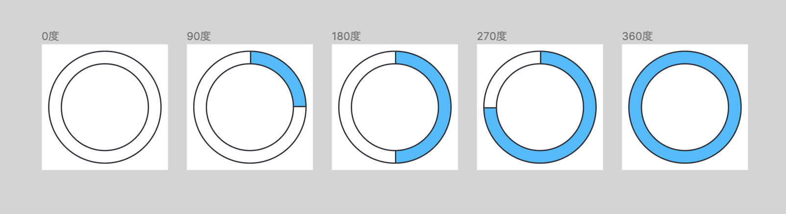
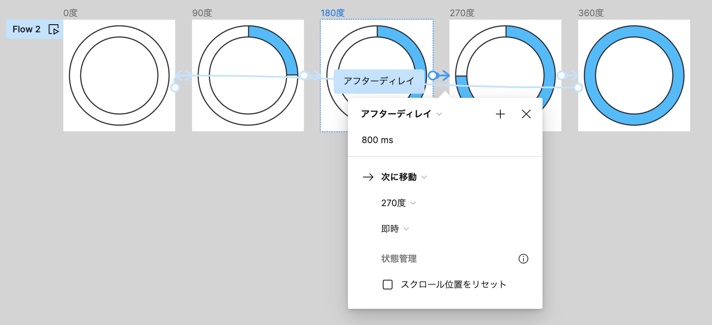

プロトタイプのアニメーション
FigmaのプロトタイプでリアルなUIアニメーションを再現する方法を紹介します。
・自動回転アニメーション（ウェイトカーソル）
・画面遷移時のアニメーション
方法：自動回転アニメーション（ウェイトカーソル）
①5つのデザインを準備する。回転前のデザイン・90度回転したデザイン・180度回転したデザイン・270度（－90度）回転したデザイン・360度（－180度）回転したデザイン
②デザイン同士を矢印（=Connection）で繋ぐ。インタラクション＞アフターディレイを設定
①5つのデザインを準備する。
⬇︎
②デザイン同士を矢印（=Connection）で繋ぐ。インタラクション＞アフターディレイを設定
⬇︎
＼結果／ツールバーの再生ボタンを押下して確認
アニメーションを繋ぐ際に秒数（ms）を小さくすると、より早くウェイトカーソルを回すことが可能です。様々な秒数を設定して試してみてください☆
トランジションはページ移動などにビジュアルな効果を与える機能です。画面の切り替えを滑らかに見せたり、アニメーションによる演出を施すことで最も伝えたい情報を強調することができます。
●ディゾルブ
ディゾルブがよく使用される演出の一つが「時間の変化」です。遷移前の画面を残しつつ徐々に遷移先の画面を演出する際に使用します。
●プッシュ
遷移元の画面を押し出して、遷移先の画面を演出させます。
●スライド
左から右、右から左、上から下等にホーム画面がスライドインしてくるシンプルなアニメーションの演出です。ホームページ全体に躍動感を出すことが可能です。遷移元の画面にスライドして表示します。
⬇︎
＼もっと詳しく／
トランジションの使い方をもっと詳しく知りたい！という方はUdemyの動画を視聴してください。
下記講座で詳しく説明してくれます☆